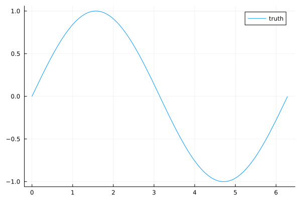
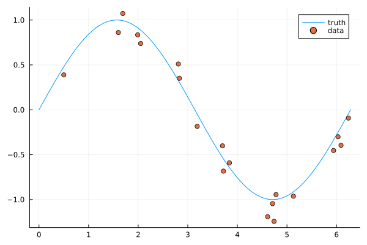
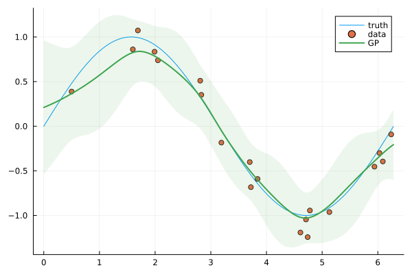
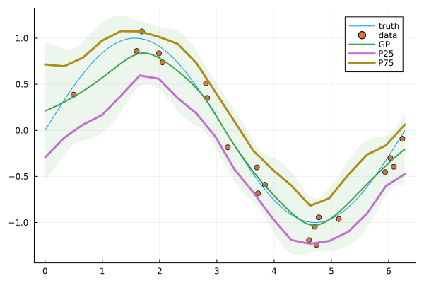

Function fitting with AbstractGPs
The purpose of this tutorial is to explain how to embed a Gaussian Process from AbstractGPs into JuMP.
Required packages
This tutorial requires the following packages
using JuMPusing Testimport AbstractGPsimport Ipoptimport MathOptAIimport PlotsPrediction model
Assume that we have some true underlying univariate function:
x_domain = 0:0.01:2πtrue_function(x) = sin(x)Plots.plot(x_domain, true_function.(x_domain); label = "truth")
We don't know the function, but we have access to a limited set of noisy sample points:
N = 20x_data = rand(x_domain, N)noisy_sampler(x) = true_function(x) + 0.25 * (2rand() - 1)y_data = noisy_sampler.(x_data)Plots.scatter!(x_data, y_data; label = "data")
Using the data, we want to build a predictor y = predictor(x). One choice is a Gaussian Process:
fx = AbstractGPs.GP(AbstractGPs.Matern32Kernel())(x_data, 0.4)p_fx = AbstractGPs.posterior(fx, y_data)Plots.plot!(x_domain, p_fx; label = "GP", fillalpha = 0.1)
Gaussian Processes fit a mean and variance function:
AbstractGPs.mean_and_var(p_fx, [π / 2])([0.8186386636285026], [0.14970169677768896])Decision model
Our goal for this JuMP model is to embed the Gaussian Process from AbstractGPs into the model and then solve for different fixed values of x to recreate the function that the Gaussian Process has learned to approximate.
First, create a JuMP model:
model = Model(Ipopt.Optimizer)set_silent(model)@variable(model, x)\[ x \]
Since a Gaussian Process is a infinite dimensional object (its prediction is a distribution), we need some way of converting the Gaussian Process into a finite set of scalar values. For this, we use the Quantile predictor:
predictor = MathOptAI.Quantile(p_fx, [0.25, 0.75]);y, _ = MathOptAI.add_predictor(model, predictor, [x])(JuMP.VariableRef[moai_quantile[1], moai_quantile[2]], Quantile(_, [0.25, 0.75])
├ variables [0]
└ constraints [0])Now, visualize the fitted function y = predictor(x) by repeatedly solving the optimization problem for different fixed values of x. Each value of y has two elements: one for the 25th percentile and one for the 75th.
X, Y = range(0, 2π; length = 20), Any[]@constraint(model, c, x == 0.0)for xi in X set_normalized_rhs(c, xi) optimize!(model) if is_solved_and_feasible(model) push!(Y, value.(y)) else push!(Y, [NaN, NaN]) endendPlots.plot!(X, reduce(hcat, Y)'; label = ["P25" "P75"], linewidth = 3)
This page was generated using Literate.jl.